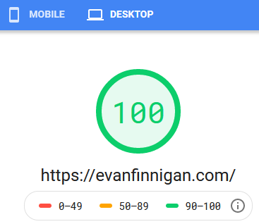
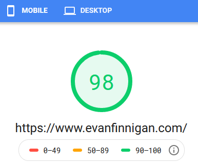

Portfolio Website - evanfinnigan.com
Github Pages VersionView the Project on GitHub
This project is my professional portfolio, it is the website which you are currently viewing. I created it with html & css, and some of the projects within it also use some javascript. I didn't use frameworks or fancy bells and whistles, keeping the project lightweight and fast to load.
The website is very fast. At the time of writing, Google's Pagespeed Insights gave the website scores of 98 and 100 on the mobile and desktop versions of the page respectively.
In addition to speed, a main focus of this project is learning about & implementing web accessibility standards. This is a work in progess as I continue to learn, but below are some evaluations of accessibility using the WebAIM WAVE tool.
Accessibility is important because not everybody views web content the same way. Some people may view the web using a screen reader. Others use keyboard navigation to traverse a page. There are many reasons for these adaptations, but what's important is that websites and software should not create barriers for their users.
While these are some good starting points for accessibility, they don't tell the whole story. These tests have only evaluated the home page, and don't even cover most of the requirements. In order to properly evaluate the accessibility of the web page to ensure compliance, thorough manual testing is still needed. I will continue working to update the website, as there are still many things I need to improve.